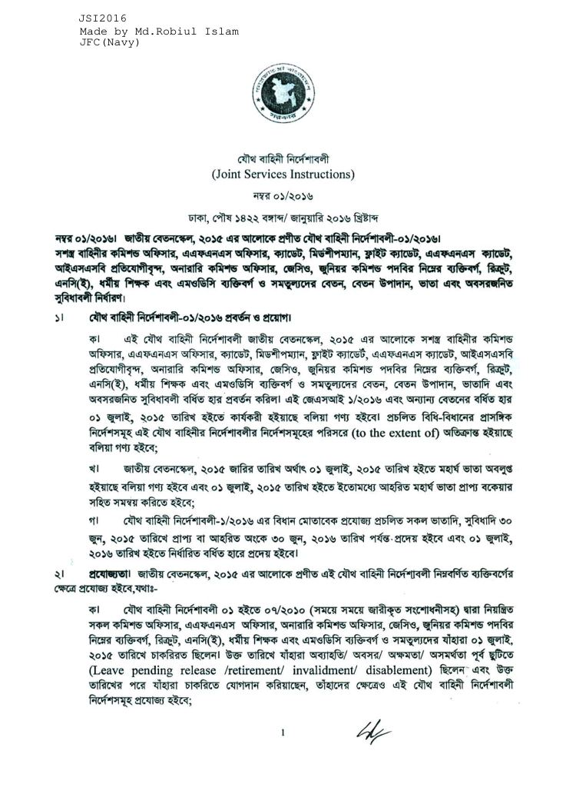

যৌথ বাহিনী নির্দেশাবলী (জেএসআই)
JSI 01/2016 — Static reference reader
← পূর্ববর্তী
পৃষ্ঠা
/
55
পরবর্তী →
জুম
80%
100%
125%
150%
PDF ডাউনলোড
পৃষ্ঠা 1
স্ক্যানকৃত মূল পৃষ্ঠা

Joint Services Instruction (JSI) 01/2016 — image-based static reference.